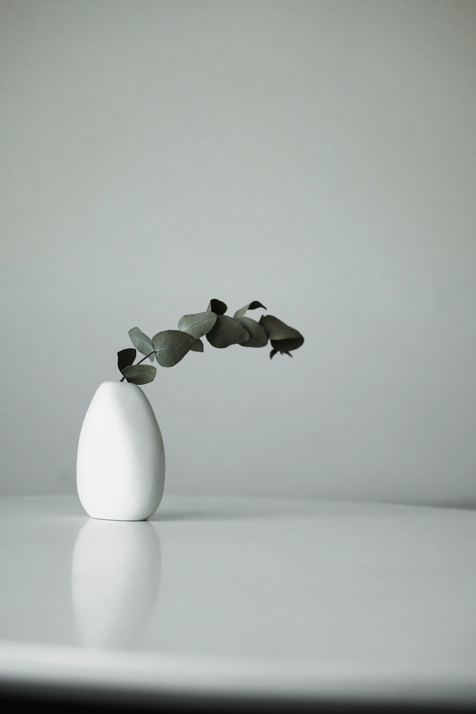

Foto Produk / artikel konsep
Brief Foto untuk Usaha Kecil, Cukup Satu Halaman
Tentukan tujuan, kanal pemakaian, daftar objek, dan batas pekerjaan sebelum membicarakan suasana foto.

Kalimat “ingin foto yang estetik” belum menjelaskan pekerjaan yang dibutuhkan. Brief tidak harus panjang, tetapi perlu membantu dua pihak membayangkan hasil yang sama. Satu halaman yang konkret lebih mudah dibahas daripada puluhan referensi tanpa catatan.
Mulai dari penggunaan hasil
Tulis foto akan digunakan untuk apa: katalog, halaman produk, menu cetak, atau materi peluncuran. Setiap kanal bisa membutuhkan rasio dan ruang teks yang berbeda. Sebutkan prioritasnya jika tidak semua kebutuhan dapat dikerjakan dalam sesi yang sama.
Contoh: tiga produk keramik akan dipotret untuk halaman toko. Masing-masing perlu tampak depan, detail tekstur, dan contoh ukuran dalam konteks. Angka ini hanya skenario brief, bukan janji paket yang tersedia. Tentukan juga siapa yang menyiapkan serta membersihkan objek.
Pilih referensi dan beri alasan
Ambil sedikit referensi, lalu tuliskan apa yang disukai: cahaya menyamping, latar yang tenang, atau jarak objek yang renggang. Pisahkan unsur yang ingin dipelajari dari hal yang tidak akan ditiru. Referensi adalah alat percakapan, bukan izin menyalin foto atau identitas visual brand lain.
Sertakan warna produk yang perlu dipertahankan dan bagian yang tidak boleh tertutup. Jika ada label penting, pastikan fotografer mengetahuinya. Bicarakan apakah penataan properti dan retouch diperlukan; jangan menganggap keduanya otomatis termasuk.
Tutup dengan daftar keputusan
Tentukan daftar foto prioritas, format penyerahan, jumlah pilihan yang akan disepakati, alur persetujuan, serta batas revisi. Bahas hak penggunaan: kanal, lama penggunaan, dan apakah foto boleh ditampilkan dalam portofolio. Detail tersebut perlu dibicarakan, bukan disembunyikan di balik kata paket lengkap.
Jika anggaran atau waktu terbatas, kurangi cakupan secara jelas. Memilih satu kebutuhan utama lebih berguna daripada memaksakan semua kanal dengan hasil yang tidak sesuai. Brief dapat diperbarui setelah foto uji, selama perubahan itu disetujui bersama.
Coba sendiri
Isi lima baris: tujuan, daftar objek, foto prioritas, referensi beserta alasan, dan hal yang perlu dikonfirmasi. Baca kembali tanpa melihat gambar referensi: apakah pekerjaannya sudah bisa dibayangkan?
- Gunakan alat yang tersedia dan minta izin sebelum memotret orang.
- Simpan satu catatan untuk dibandingkan pada latihan berikutnya.